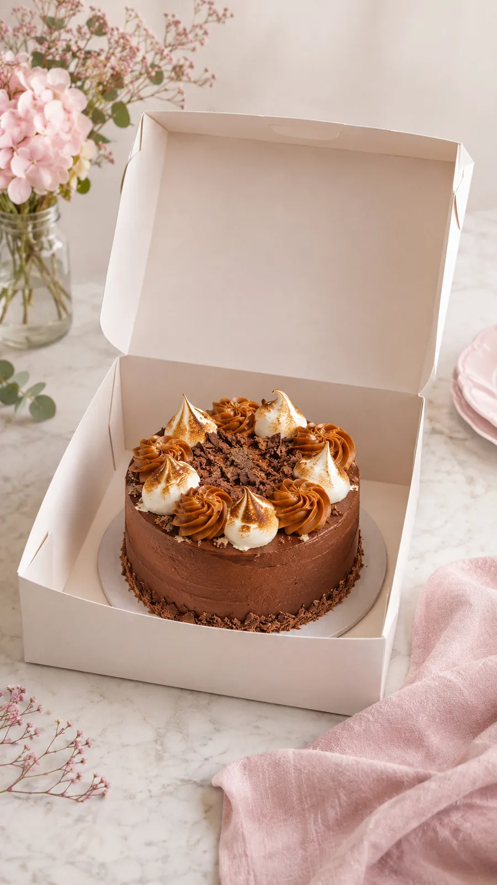
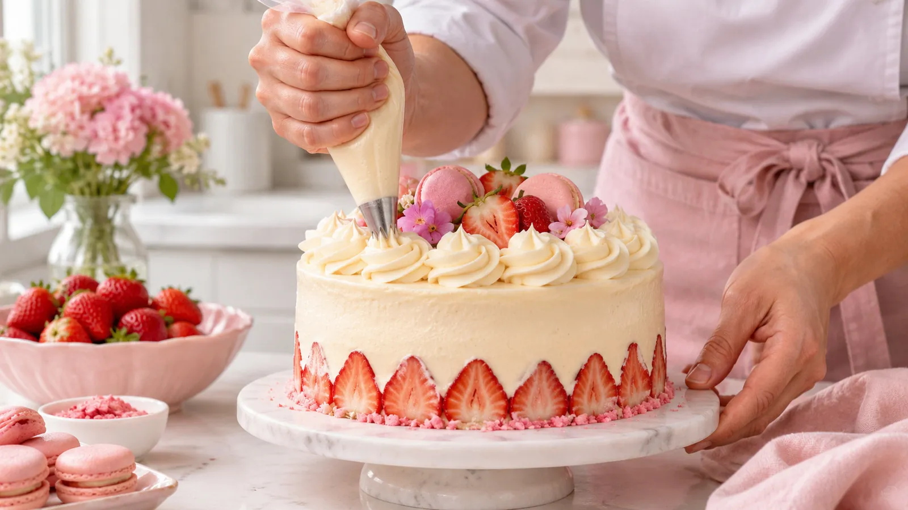
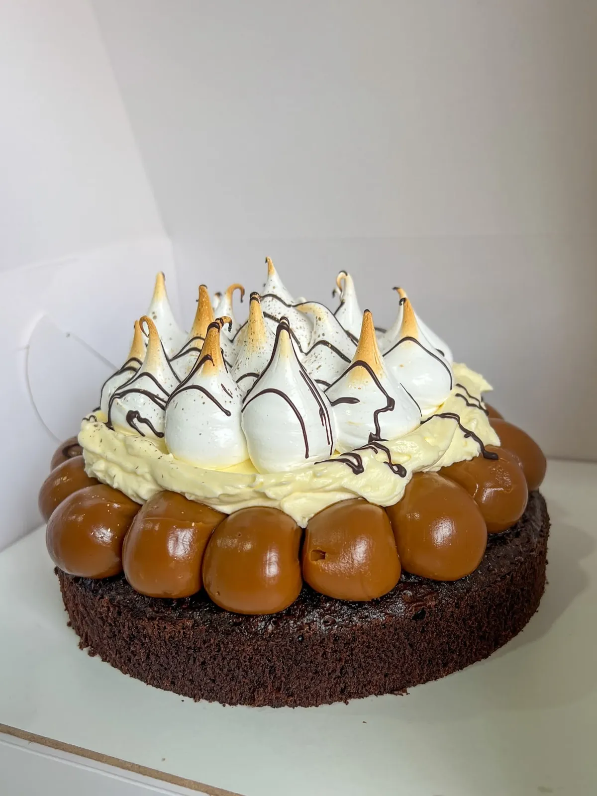
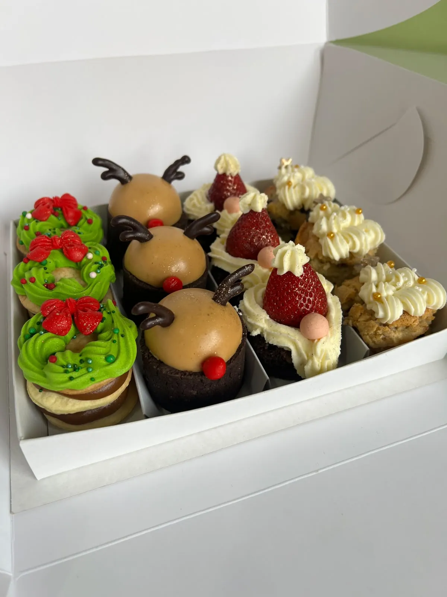
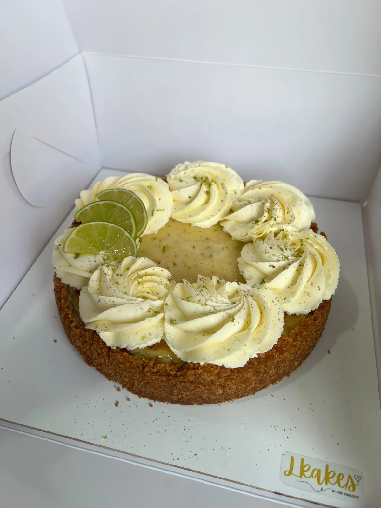

Una experiencia dulce · by Lore Koniusyzk
Hacé en tu casa las tortas de Lkakes, paso a paso en video

Clase 1 de 9 · 17 min
Bizcocho húmedo de chocolate
Recetarios para descargar y clases en video de tortas, tartas, postres y Navidad, explicadas desde la masa hasta la decoración.
- Clases en video para pausar y repetir
- Recetarios PDF para imprimir
- Acceso con tu usuario, desde el celu
Elegí por dónde empezar

Así llegan las recetas a tu cocina
- 01
Elegí la receta o el recetario
Cada clase dice nivel, tiempo y qué vas a necesitar antes de comprarla.
- 02
Pagá online y entrá con tu usuario
Al confirmar el pago se activa tu acceso; Lore también te puede mandar el enlace de una clase.
- 03
Cociná a tu ritmo
Pausá el video en el paso que necesites y tené el recetario impreso al lado de la mesada.
Todos los recetarios y clases
9 recetarios y clases
Filtrar
Formato
Categoría
Nivel
No encontramos esa receta.
Probá con «chocolate» o «Navidad», o limpiá los filtros para ver todo.



Fotos reales de la cocina de Lkakes
Quién enseña
Las recetas salen de la cocina de Lore
Lore Koniusyzk hace tortas, tartas y boxes por encargo en Lkakes. Las clases enseñan esas mismas recetas, con los tiempos y las terminaciones que usa para que cada torta llegue entera a su caja.
Encargar una torta por WhatsAppRecorridos sugeridos
Si nunca hiciste una torta
Para las fiestas
Si te gustan las tartas
Preguntas antes de empezar
¿Te quedó otra duda? Escribile a Lore por WhatsApp.
¿Necesito experiencia para empezar?
No. Las clases de nivel inicial arrancan desde pesar los ingredientes, y las de nivel intermedio avisan qué conviene saber antes.
¿Qué diferencia hay entre un recetario y una clase en video?
El recetario es un PDF con cantidades, tiempos y fotos del paso a paso. Las clases en video muestran cada técnica y traen su recetario.
¿Puedo verlas desde el celular?
Sí. Entrás con tu usuario desde el celu, la tablet o la compu, y pausás el video en el paso que necesites.
¿Cómo recibo el acceso?
Al confirmar el pago se activa tu usuario. Si preferís, Lore también te puede mandar el enlace de una clase por WhatsApp.
¿Lkakes hace tortas por encargo?
Sí: Lore prepara tortas, tartas y boxes. Escribile por WhatsApp para coordinar sabores y fechas.
Tu primera torta de Lkakes empieza con una receta
Elegí un recetario o una clase y cociná a tu ritmo, con Lore explicando cada paso.